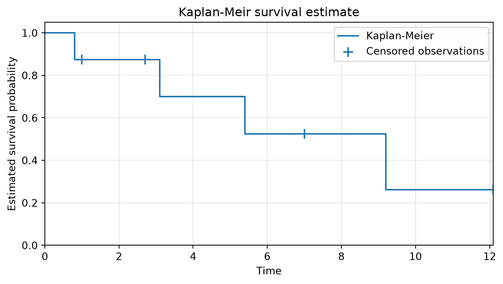

12Introduction to Survival Analysis and Parametric Survival Models
Survival analysis is concerned with the statistic description of the time until an event occurs. The central difficulty is that the event of interest may not be observed for every individual. Unlike ordinary statistical estimation, where a sample is generally assumed to contain complete observations, survival analysis must extract information from observations that may be incomplete. This problem motivates the development of nonparametric survival estimation and, parametric distributions that describe survival probabilities through a small number of interpretable parameters.
Historically, these two approaches developed complementary roles. Weibull (1951) demonstrated how a simple parametric distribution could characterize failure phenomena across different populations. Kaplan and Meier (1958) established a nonparametric estimator capable of recovering a survival distribution from incomplete observations without specifiying its functional form. Later, Aitkin and Clayton (1980) demonstrated how exponential, Weibull, and extreme-value distributions could be incorporated into regression models for censored survival data.
1 Statistical distributions: Parametric and nonparametric approaches
1.1 Statistical inference as the estimation of a distribution
Suppose that \(X\) is a random variable describing a measurable characteristic of a population. Its cumulative distribution function is defined by
\[
F(x) = \P(X\leq x)
\]
The distribution function characterizes the probability law of \(X\). If the distribution is continuous, it admits a probability density function
\[
f(x) = \frac{dF(x)}{dx},
\]
abd probabilities over intervals can be obtained through integration:
In statistical inference, however, the underlying distribution is generally unknown. Instead, we observe a random sample
\[
X_1, X_2, \ldots, X_n \overset{iid}{\sim} F
\]
and attempt to construct an estimate of \(F\) from the information contained in these observations. This problem can be viewed as selecting an admissible distribution from a class of candidate distributions. The distinction between parametric and nonparametric estimation aries from how restrictive this admissible class is.
1.2 Parametric estimation
A statistical model is called parametric when the admissible distribution are described by a finite-dimensional parameter vector:
Once \(\hat \theta\) is obtained, the entire fitted distribution follows from
\[
\hat F(x) = F(x; \hat \theta)
\]
The primary advantage of parametric estimation is that a potentially complicated distribution is represented through a small number of parameters. When the assumed family is appropriate, estimation can be statistically efficient, inference can be relatively simple, and the resulting model can provide estimates beyond the observed range.
These benefits depend on the validity of the assumed distributional structure. If the true distribution is different from the selected family, even an accurately estimated parameter vector may produce misleading probabilities.
1.3 Nonparametric estimation
A nonparametric estimator avoids specifying a particular finite-dimensional distributional family. Instead, the admissible class is sufficiently broad to include arbitrary distribution functions.
When all observations are complete, the nonparametric estimate of \(F\) is the empirical distribution function
This uniform convergence statement is a standard extension of the empirical-distirbution theory.
Characteristic
Parametric
Nonparametric
Distribution assumption
Prespecified family
No prespecified family
Object being estimated
Finite-dimensional \(\theta\)
Entire distribution \(F\)
Typical estimator
Maximum likelihood estimate of \(\theta\)
Empirical distribution
Extrapolation
Possible under model assumptions
Generally unsupported outside observed data
Main concern
Model misspecification
Variability and limited tail information
A nonparametric estimate can suggest or assess an appropriate parametric family, while a paramtetric model can provide a more economical representation when its assumptions are supported by the observations.
2 Mathematical foundations of survival analysis
2.1 From ordinary observations to survival times
Let \(T\) be a nonnegative random variable representing the time from a defined origin until an event of interest occurs:
\[
T\geq 0
\]
Example 1\(T\) could represent death after diagnosis, relapse following treatment, failure of a mechanical component, or the termination of an operating system.
For example, suppose patients are followed after receving a treatment. Rather than asking only how many patients experienced the event, we may wish to determine how the probability of remaining event-free changes as follow-up time increases.
Two populations could have the same final proportion of observed events but different distributions of the event times. A comparison based on final event counts would fail to distinguish them.
Survival analysis retains the timing information.
2.2 The survival function
Definition 1 (Survival function) The survival function of \(T\) is
\[
S(t) = \P(T> t) = 1- F(t)
\]
It represents the probability that an individual survives beyond time \(t\).
For a continuous, nonnegative event time with \(\P(T> 0)= 1\), the survival function satisfies
\[
S(0) = 1, \quad 0 < S(t) < 1
\]
and is nonincreasing in \(t\). For a proper event-time distribution with eventual failure,
\[
\lim_{t\to \infty} S(t) = 0
\]
Since \(F(t) = 1-S(t)\), the density can be recovered from the survival function
\[
f(t) = - \frac{dS(t)}{dt}.
\]
Consequently, when a density exists,
\[
S(t) = \int_{t}^\infty f(u) du
\]
The survival function therefore contains the same distributional information as the density or cummulative distribution function, but we express it in a form that represents the probability of remaining event-free.
2.3 The hazard function
Although the survival function describes describes the probability of surviving beyond a given time, another question is:
Among individuals who have already survided to time \(t\), how likely is the event to occur immediately afterward?
This motivates the hazard function.
Definition 2 (Hazard function) For a continuous survival time, the hazard is
\[
h(t) = \lim_{\Delta t \to 0^+} \frac{\P(t\leq T < t+ \Delta t \mid T \geq t)}{\Delta t}
\]
provided that the limit exists.
Using conditional probability,
\[
\P(t\leq T < t+ \Delta t \mid T\geq t) = \frac{F(t+\Delta t) - F(t)}{S(t)}
\]
for a continnuous distribution. Dividing by \(\Delta t\) and taking the limit gives
\[
h(t) = \frac{f(t)}{S(t)}
\]
The hazard measures the instanteneous rate of event occurence among individuals still at risk at time \(t\).
It is important to distinguish a hazard from an ordinary probability. A hazard has units of inverse time and is not required to lie between zero and one. For sufficiently small \(\Delta t\),
\[
\P(t \leq T < t + \Delta t \mid T \geq t) \approx h(t) \Delta t
\]
Thus, the hazard describes a local conditional rate, whereas the survival function describes an accumulated probability over time.
2.4 The cummulative hazard the survival-hazard relationship
Definition 3 (Cummulative hazard) The cummulative hazard function is
\[
H(t) = \int_0^t h(u) du.
\]
The relationship among the survival function, density, hazard, and cumulative hazard is fundamental to the remainder of survival.
Theorem 1 (Survival hazard identity) Suppose that \(T\) has an absolutely continuous distribution, \(S(0) = 1\) and \(S(t)>0\) over the interval considered. Then
Unlike the mean, which depends on the entire tail of the distribution, the median depends only on the point at which the survival probability falls to one-half.
2.6 The fundamental problem of censoring
The previous definitions describe a complete event-time distribution. In practice, however, it may be impossible to observe \(T_i\) for every individual.
Example 2 Consider a study that ends after twelves months. A patient whose event occurs at month six provides a complete event time. A patient who remains event-free at the end of the study does not provide an exact event time, but we still know that the event time exceeds twelve months.
Discarding the second individual would ignore valuable information.
Definition 4 (Right censoring) Let \(T_i\) be the event time and \(C_i\) the censoring time. The observed data are
\[
\delta_i = \begin{cases}
1, & \text{the event is observed}, \\
0, & \text{the observation is right-censored}.
\end{cases}
\]
For a censored individual, the exact value of \(T_i\) is unknown, but the observation establishes that \(T_i > Y_i\).
Example 3
Four patients followed for 12 months
For Patient B, who leaves the study at month eight without experiencing the event, the observation does not establish that \(T_B=8\). Rather, it tells us that \(T_B > 8\). Similarly, Patient D is event-free through month twelve, but could experience the event at any later time.
Kaplan and Meier (1958) formulated this problem through the minimum of an event time and an observation limit, calling the two observation outcomes deaths and losses. A death represent any event of interest, while a loss represents an observation whose endpoint cannot be determined.
Other forms of incomplete event-time data also arise. Under left censoring, an event is known to have occured before a particular time; under interval censoring, it is known to lie within an interval. Left truncation is different: individuals enter the observed sample only if they survive long enough to become observable.
2.7 Likelihood for censored survival observations
Ordinary maximum likelihood estimation assumes that each observation contributes a density value \(f(T_i; \Theta)\). Censored survival data require a different likelihood contribution.
Suppose that event times and censoring times are independent, with separately parameterized distributions. More generally, this independence may be assumed conditionally on observed covariates.
When \(\delta_i = 1\), the observation contributes information about the density of the event time:
\[
f(Y_i; \theta).
\]
When \(\delta_i = 0\), the observation contributes information about the probability of surviving beyond the censoring time
\[
S(Y_i;\theta).
\]
After separating factors associated with the censoring mechanism, the likelihood for the event-time parameters is therefore
This expression is the foundation of likelihood-based paramtetric survival modeling, and it is also the starting point for the regression formulation developed by Aitkin and Clayton (1980).
Every individual contributes accumulated hazard through \(H(Y_i)\), while only individuals whose events are observed contribute the log-hazard term.
3 Nonparametric survival estimation: The Kaplan-Meier estimator
3.1 Why the empirical distribution is insufficient
With complete observations, the empirical survival function follows directly from the empirical distribution:
This estimator is the proportion of observed individuals whose event times exceed \(t\). However, under right censoring, we observe only \(Y_i = \min(T_i, C_i)\).
would estimate \(\P(T> t, C> t)\), rather than \(\P(T> t)\). Under independence,
\[
\P(Y> t) = S_T(t) S_C(t),
\]
which is smaller than the desired survival probability. So the censoring changes the distribution of the observe times. Kaplan and Meier (1958) addressed this difficulty by constructing the survival probability as a product of conditional survival probabilities. Instead of attempting to estimate \(S(t)\) directly from the total sample, their approach estiamtes how much the surviving population remains after each observed event time.
3.2 Construction of the product-limit estimator
Let
\[
0 < t_{(1)} < t_{(2)} < \cdots < t_{(m)}
\]
denote the distinct observed event times.
At each event time \(t_{(j)}\), we define \(r_j\) as the number of individuals at risk immediately before \(t_{(j)}\), and \(d_j\) as the number of events occurring at the \(t_{(j)}\). An individual is considered at risk if they have entered the study and have neither experienced the event nor been censored before that time.
The conditional probability of surviving the event time can be estimated by
\[
\hat p_j = 1-\frac{d_j}{r_j}.
\]
Using the multiplication rule for conditional probabilities,
where the event times partition the possible failures. Replacing each conditional probability by its empirical estimate gives the product-limit estimator.
By convention, the empty product is one, so the estimator begins at \(1\) before the first event. The result is a right-continuous step function. Its value decreases at observed event times and remains unchanged at censoring times.
3.3 Maximum likelihood interpretation
Theorem 3 (Product-limit maximum likelihood estimator) Under independent, noninformative right censoring, the nonparametric maximum likelihood estimate of the survival distribution, at identifiable event times, is
represent the conditional event probability at the \(j\)-th observed event time, where an arbitrary candidate distribution may assign probability mass to that time.
The corresponding conditional survival probability is \(1-q_j\). After separating the factors associated with censoring, the relevant nonparametric likelihood can be written as
so the stationary point is a maximum whenever it is interior. Boundary cases give the corresponding boundary maximizers. Because the survival distribution is the product of the conditional survival probabilities,
This derivation captures the argument of Kaplan and Meier (1958)’s original maximum likelihood treatment. It also explains why the estimator can be obtained without assuming that survival times.
An important qualification concerns the final observed time. If the final observation is concerned and the estimated survival probability remains positive, the distribution beyond that time is not uniquely determined by the likelihood. There is no statistical basis for forcing the survival curve to zero at the end of observation.
3.4 A numerical example
Consider eight individuals followed over time. Four events are observed, while four individuals are censored. The observations are adapted from Kaplan and Meier (1958):
The two observations censored at times 1.0 and 2.7 explain why the risk set decreases from eight individuals initially to five immediately before the event at time 3.1
This calculation illustrates a fundamental property: a censored observation contributes to the risk set up to its censoring time, rather than being treated as either an observed failure or an individual who survives indefintely.
import numpy as np import matplotlib.pyplot as plt # 1 = observed event, 0 = right centered times = np.array([0.8, 1.0, 2.7, 3.1, 5.4, 7.0, 9.2, 12.1])event = np.array([1, 0, 0, 1, 1, 0, 1, 0])event_times = np.unique(times[event==1])survival = [1.0]for t in event_times: risk = np.sum(times>=t) deaths = np.sum((times == t) & (event ==1)) survival.append(survival[-1] * (1-deaths/risk))# Plot the survival step function x = np.r_[0, event_times, times.max()]y = np.r_[survival, survival[-1]]plt.figure(figsize=(8, 4))plt.step(x, y, where="post", label="Kaplan-Meier")# mask censored observation censored = times[event==0]censor_y = [survival[np.sum(event_times <= t)] for t in censored] plt.scatter(censored, censor_y, marker="+", s=90, label="Censored observations")plt.xlabel("Time")plt.ylabel("Estimated survival probability")plt.title("Kaplan-Meir survival estimate")plt.ylim(0, 1.05)plt.xlim(0, times.max())plt.legend()plt.grid(alpha=0.3)plt.show()

The curve is constant between event times because the estimator does not assume a smooth underlying survival distribution. It decreases only when new event information is observed.
3.5 Statistical properties of the product-limit estimator
The first important property is that Kaplan-Meier estimator reduces to the ordinary empirical survival function when censoring is absent.
Proposition 2 If all \(n\) observations are complete and their event times are distinct, then
which is the empirical proportion of surviving individuals.
Thus, the product-limit estimator is a generalization of the empirical survival function to incomplete observations.
The second property concerns transformations of the time scale.
Proposition 3 (Invariance under increasing transformation) Let \(g\) be strictly increasing and define \(U = g(t)\). If both the event times and the corresponding censoring times are transformed by \(g\), then
\[
\hat S_U(g(t)) = \hat S_T(t)
\]
Proof. A strictly increasing transformation preserves the ordering of event and censoring times. Consequently, the risk sets \(r_j\) and event counts \(d_j\) remain unchanged. The product-limit factors are identical, and the estimator is transformed only along its horizontal axis.
This property is useful because the same survival information can be represented on the original time scale or on a logarithmic time scale without changing the estimated conditional survival probabilities.
3.5.1 Consistency
Under suitable regularity assumption, independent noninformative censoring, and sufficient follow-up information, the Kaplan-Meier estimator is consistent.
Theorem 4 (Pointwise consistency) At an identifiable time \(t\), where \(S(t)\) is estimable and the relevant risk sets grow sufficiently large as the sample size increases,
A short proof can be understood by considering a fixed collection of event-time interccals. Within each interval, the estimated conditional survival proportion converges to its population counterpart by the law of large number. Since multiplication is continuous, the product of these estimates converges to the corresponding population survival probability. A full proof must address the increasing number of event times and the possibility that some risk sets become empty. Kaplan and Meier (1958) examined these issues in their discussion of consistency.
3.5.2 Variance and Greenwood’s formula
Because the Kaplan-Meier estimator is a product of estimated conditional probabilites, its sampling variability accumulates over event times. The large-sample variance estimator is
The relatively large standard error reflects the small sample and the loss of information through censoring. For pratical confidence intervals, transformations of the survival estimate, such as the complementary log-log transformation, are often preferable to a simple normal interval on the original survival-probability scale.
3.6 Mean survival and the effects of incomplete follow-up
Since
\[
\E[T] = \int_0^\infty S(t) dt,
\]
it is more common to estimate the mean lifetime using
\[
\E[T] = \int_0^\infty \hat S_{KM}(t) dt
\]
However, this intergral presents an important difficulty when the largest observation is censored and the survival estimate remains positive. The right-hand tails is not identified from the availabel information. so the unrestricted mean cannot be estimated without additional assumptions.
A more appropriate summary is often the restricted mean survival time through a predetermined horizon \(\tau\):
This is the estimated mean duration of event-free survival accumulated within the first \(\tau\) units of time. It avoids extrapolation beyond the selected horizon, provided that the observation process supports estimation over that interval.
3.7 Alternative nonparametric estimates
Kaplan and Meier also discussed two related alternatives: reduced-sample estimation and actuarial estimation.
The reduced-sample estimator estimates \(S(t)\) using only those individuals whose observation limits would permit follow-up through time \(t\). If \(N^*(t)\) such individuals are available, and \(n^*(t)\) of them survive beyond \(t\), then
\[
\hat S_{RS}(t) = \frac{n^*(t)}{N^*(t)}
\]
This estimator requires information about potential observation limits, including limits for individuals whose event occur earlier. Such information is not always available, especially when censoring aries from unpredictable.
Under the relevant independence assumptions, the reduced sample is a random sample, so the estimator is binomial. However, it may discard substantial information and can be less efficient than the product-limit estimator. Interestingly, the reduced-sample estimator need not be monotone in \(t\), because the composition of its sample changes with the observation horizon.
Actuarial estimation instead divides time into intervals and estimates conditional survival probabilities from grouped event and censoring counts. A frequently used approximation for an interval beginning with \(r_j\) individuals, containing \(d_j\) events and \(c_j\) censorings, is
\[
\hat p_j \approx 1- \frac{d_j}{r_j - c_j/2}
\]
This expression assumes, approximately, that censoring is spread uniformly through the interval, so that censored individuals contribute about half an interval of exposure. When exact event and censoring times are known, Kaplan-Meier estimation avoids this grouping approximation. When only aggregated data are available, actuarial methods can remain useful.
4 Parametric survival distributions
Aitkin, Murray, and David Clayton. 1980. “The Fitting of Exponential, Weibull and Extreme Value Distributions to Complex Censored Survival Data Using GLIM.”Applied Statistics 29 (2): 156. https://doi.org/10.2307/2986301.
Kaplan, E. L., and Paul Meier. 1958. “Nonparametric Estimation from Incomplete Observations.”Journal of the American Statistical Association 53 (282): 457–81. https://doi.org/10.1080/01621459.1958.10501452.
Weibull, Waloddi. 1951. “A Statistical Distribution Function of Wide Applicability.”Journal of Applied Mechanics 18 (3): 293–97. https://doi.org/10.1115/1.4010337.